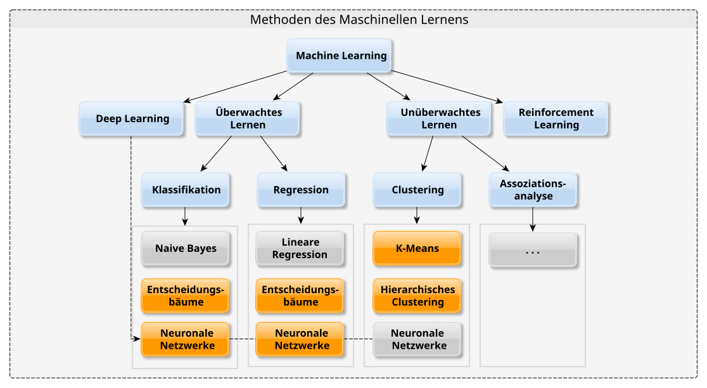
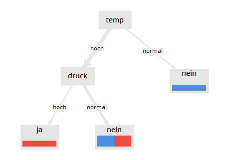
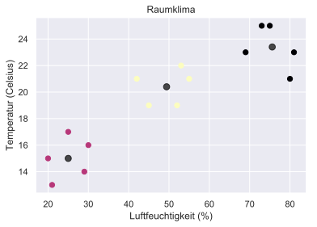
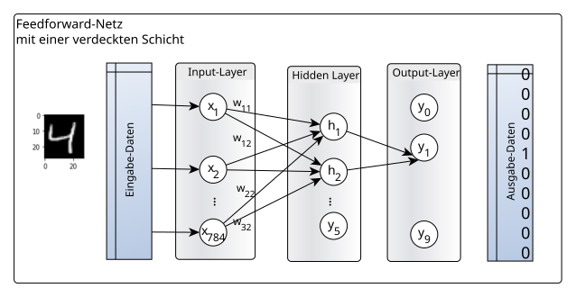
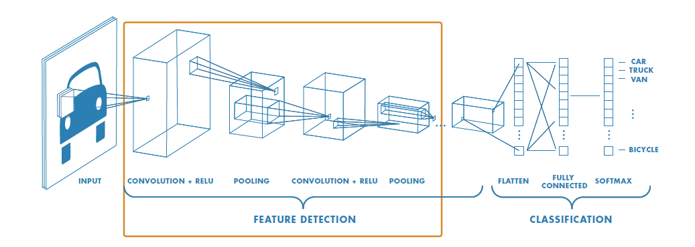

Data Science Algorithmen
Wissenschaftliche Dokumentation zu Machine Learning Algorithmen mit Code, Mathematik und Projekten
🎯 Welcher Algorithmus für dein Problem?
Wähle den richtigen Algorithmus anhand dieser Kriterien:
Decision Tree
- ✓ Tabellarische Daten (CSV)
- ✓ Erklärbarkeit wichtig
- ✓ Kleine bis mittelgroße Datensätze
- ✓ Keine GPU benötigt
- ✗ Bilderkennung
- ✗ Sequenzdaten
CNN
- ✓ Bilder & Videos
- ✓ Objekterkennung
- ✓ Räumliche Muster
- ✓ GPU vorhanden
- ✗ Kleine Datasets ohne Augmentation
- ✗ Textdaten nativ
Neural Network (MLP)
- ✓ Allgemeine Klassifikation
- ✓ Regression
- ✓ Nicht-lineare Muster
- ✓ Tabellarisch + strukturiert
- ✗ Bilder (besser CNN)
- ✗ Sequenzen (besser Transformer)
Transformer
- ✓ Text, NLP, übersetzung
- ✓ Lange Sequenzen
- ✓ Abhängigkeiten über Distanz
- ✓ Große Datenmengen
- ✗ Sehr kleine Datasets
- ✗ Kein GPU-Zugang
SVM
- ✓ Tabellarische Daten
- ✓ Hochdimensionale Räume
- ✓ Kleine bis mittelgroße Datasets
- ✓ Nicht-lineare Muster (Kernel)
- ✗ Große Datensätze (langsam)
- ✗ Überlappende Klassen
Naive Bayes
- ✓ Textklassifikation / Spam
- ✓ Sehr schnell, wenig Daten
- ✓ Mehrklassenprobleme
- ✓ Kein GPU benötigt
- ✗ Feature-Abhängigkeiten
- ✗ Stetige Merkmals-Korrelationen
Logistische Regression
- ✓ Binäre Klassifikation
- ✓ Interpretierbar (Koeffizienten)
- ✓ Tabellarische Daten
- ✓ Baseline-Modell
- ✗ Nicht-lineare Grenzen
- ✗ Sehr viele Kategorie-Features
ONNX
- ✓ Modell deployen
- ✓ Framework-Wechsel
- ✓ Edge / Mobile
- ✓ Produktionssystem
- ✗ Training (nur Inferenz)
- ✗ Custom Ops komplex
🧠 Machine Learning — Konzepte, Methoden & Tools
Ein strukturierter Überblick: Was steckt hinter Machine Learning, welche Lernverfahren gibt es, was sind typische Anwendungen und welche Tools werden eingesetzt?
Was ist Machine Learning?
Machine Learning ist ein Teilgebiet der Künstlichen Intelligenz, das es Systemen ermöglicht, auf Basis von Trainingsdaten automatisch zu lernen und sich zu verbessern – ohne explizit programmiert zu werden.
„Eine Maschine lernt aus der Erfahrung E hinsichtlich einer Klasse von Aufgaben T und dem Performance-Maß P, falls die Performance P hinsichtlich T mit E sich verbessert.“ — Tom Mitchell, 1997
Verwandte Disziplinen: Pattern Recognition (Mustererkennung in Sprache & Bildern), Data Mining (Querverbindungen in Big Data), Deep Learning (neuronale Netze mit hunderten Schichten).
🎓 Lernverfahren im Überblick

Supervised Learning – Jeder Datensatz hat eine bekannte Bewertung / Klasse. Das Modell lernt eine Abbildung von Eingabe auf Ausgabe.
Ablauf: Trainingsdaten aufteilen → Modell trainieren → mit Testdaten validieren → Hyperparameter optimieren
Aufgaben:
- Klassifikation – Kategorie vorhersagen (Spam/kein Spam, Ausfall ja/nein)
- Regression – Numerischen Wert vorhersagen (Stromverbrauch, Preis)
Typische Algorithmen: Decision Tree, Random Forest, SVM, Naive Bayes, Logistische Regression, Neuronale Netze

Unsupervised Learning – Keine Bewertungen vorhanden. Das System erkennt selbstständig Muster und Strukturen in den Daten.
Aufgaben:
- Clustering – Gruppen ähnlicher Beobachtungen finden (K-Means, Hierarchisches Clustering)
- Dimensionsreduktion – Merkmalsraum verkleinern (PCA, t-SNE)
- Anomalie-Erkennung – Abweichungen vom Normverhalten identifizieren
Beispiel: Raumklima-Sensordaten nach Temperatur & Luftfeuchtigkeit in „behaglich“, „zu trocken“, „zu feucht“ clustern

Reinforcement Learning – Ein Agent interagiert mit seiner Umgebung und optimiert eine Belohnungsfunktion durch Versuch und Irrtum.
Grundlage: Markovsche Entscheidungsprozesse (MDP) – Zustände S, Aktionen A, Übergangswahrscheinlichkeiten, Belohnungen r
- Kein beschriftetes Dataset nötig
- Lernt durch Interaktion mit der Umgebung
- Ziel: optimale Strategie (Policy) finden
Anwendungen: Roboterbewegung, Prozessautomatisierung, Spielstrategien (AlphaGo), Dialogsysteme
Agent & Umgebung🌎 Typische Anwendungsfelder
Sensordaten (Vibration, Temperatur, Druck) mit Klassifikation & Clustering analysieren → Ausfälle rechtzeitig vorhersagen und Wartungsfenster einplanen
Fahrerassistenz, medizinische Diagnose, Chatbots – Objekterkennung mittels Deep Learning (CNN, R-CNN, YOLO) in Echtzeit
Endpoint-Protection: Klassifikation neuer Bedrohungen. Anomalie-Erkennung (Clustering) – auch ohne Vergangenheitsdaten in Echtzeit
Webcrawler-Klassifikation (relevant/nicht relevant), Deep Learning für Bild-Objekterkennung, Kontextverständnis aus Text & Bild-Metadaten
ChatGPT (GPT = Generative Pre-trained Transformer), Llama (Meta) – Text-Generierung, Code-Erzeugung, Übersetzung, Frage-Antwort-Systeme
Naive Bayes / SVM klassifiziert E-Mails als Spam / kein Spam. Sentiment Analysis mit LSTM-Netzwerken – Stimmung aus Texten extrahieren
Deep Learning
Deep Learning ist ein eigenständiges Forschungsgebiet des ML, das neuronale Netze mit sehr vielen versteckten Schichten (hunderte) einsetzt. Im Unterschied zum klassischen ML lernt Deep Learning die relevanten Merkmale automatisch aus den Rohdaten.

🖼 Convolutional Neural Networks (CNN)
Für Bilder & Videos: Feature-Extraktion durch Faltungs-Schichten + Klassifikation. Frameworks: YOLO (Echtzeit-Objekterkennung), R-CNN (zweistufig: lokalisieren → klassifizieren), SSD

📋 Rekurrente Netze (RNN / LSTM)
Für sequentielle Daten: Text, Sprache, Zeitreihen. LSTM (Long Short-Term Memory) ermöglicht Abhängigkeiten über lange Zeiträume – Basis für Sprachmodelle und Zeitreihenprognose
Benötigt: Große Datenmengen • Spezialisierte GPUs fürs Training • Alternativ: Transfer Learning mit vortrainierten Modellen
🛠 Sprachen & Frameworks
- Gut lesbar, schneller Einstieg
- Multiplattform (Windows, Linux, Mac, Raspberry Pi)
- Riesiges Ökosystem: NumPy, Pandas, scikit-learn, Keras, PyTorch, TensorFlow
- Jupyter Notebook für interaktive Analyse
- Kommerziell, oft in Maschinenbau & Elektrotechnik
- Statistics & Machine Learning Toolbox
- Deep Learning Toolbox
- Live Script Editor für interaktive Skripte
- Open Source, kostenlos
- Klarer Fokus auf Statistik & Datenanalyse
- Paket
rpartfür Entscheidungsbäume - Stark in Wissenschaft und Wirtschaft
🕐 Historische Meilensteine
Decision Tree
Was ist ein Decision Tree?
Ein Decision Tree ist ein überwachtes Lernverfahren, das Daten durch eine Reihe von if-else-Entscheidungen klassifiziert. Das Modell wählt bei jedem Knoten die Aufteilung, die den Information Gain oder den Gini-Index maximiert.
Algorithmen im Vergleich
| Algorithmus | Splitting-Kriterium | Besonderheit |
|---|---|---|
| ID3 | Information Gain (Entropie) | Nur kategorische Features |
| C4.5 | Gain Ratio | Korrigiert Bias für viele Werte |
| CART | Gini-Index | Binäre Splits, scikit-learn Standard |
Mathematik
Entropie:
$H(S) = -\sum_{i=1}^{c} p_i \log_2 p_i$
Information Gain:
$IG(S, A) = H(S) - \sum_{v \in A} \frac{|S_v|}{|S|} H(S_v)$
Gini-Index:
$Gini(D) = 1 - \sum_{i=1}^{c} p_i^2$
Gain Ratio (C4.5):
$GainRatio(S, A) = \frac{IG(S, A)}{SplitInfo(S, A)}$
Vollständiges scikit-learn Beispiel (Pima Indians Diabetes)
# 1. Bibliotheken importieren
import pandas as pd
from sklearn.tree import DecisionTreeClassifier, export_graphviz
from sklearn.model_selection import train_test_split
from sklearn import metrics
# 2. Daten laden
url = "https://raw.githubusercontent.com/jbrownlee/Datasets/master/pima-indians-diabetes.data.csv"
col_names = ["Pregnancies","Glucose","BloodPressure","SkinThickness",
"Insulin","BMI","DiabetesPedigreeFunction","Age","Outcome"]
df = pd.read_csv(url, header=None, names=col_names)
# 3. Features und Zielvariable
X = df[col_names[:-1]]
y = df["Outcome"]
X_train, X_test, y_train, y_test = train_test_split(X, y, test_size=0.3, random_state=1)
# 4. Modell trainieren (Standard)
clf = DecisionTreeClassifier()
clf.fit(X_train, y_train)
y_pred = clf.predict(X_test)
print("Standard Accuracy:", metrics.accuracy_score(y_test, y_pred)) # ~67.5%
# 5. Optimierter Baum — entropy + max_depth=3
clf_opt = DecisionTreeClassifier(criterion="entropy", max_depth=3)
clf_opt.fit(X_train, y_train)
y_pred_opt = clf_opt.predict(X_test)
print("Optimierte Accuracy:", metrics.accuracy_score(y_test, y_pred_opt)) # ~77.1%Wichtige Hyperparameter
| Parameter | Werte | Effekt |
|---|---|---|
| criterion | "gini" / "entropy" | Splitting-Strategie |
| max_depth | 1..N / None | Tiefe begrenzen verhindert Overfitting |
| min_samples_split | 2..N | Mindestanzahl Samples für Split |
| min_samples_leaf | 1..N | Mindestanzahl Samples im Blatt |
✅ Vorteile
- Einfach zu verstehen & visualisieren
- Kein Preprocessing nötig
- Basis für Ensemble-Methoden (Random Forest, AdaBoost)
- Decision Stump (max_depth=1) = Baustein für Boosting
❌ Nachteile
- Overfitting ohne Pruning
- Instabil: kleine Datenänderungen = anderer Baum
- Schwach bei Bilderdaten
Convolutional Neural Networks (CNN)
Biologische Inspiration
CNNs wurden durch den visuellen Kortex inspiriert (Hubel & Wiesel, 1962). Neuronen reagieren nur auf bestimmte Bereiche des Gesichtsfelds — das Konzept der "receptive fields". CNNs imitieren this durch lokale Filter, die über das Bild gleiten.
Architektur-Komponenten
- Conv Layer: Ein Kernel (Filter) gleitet über die Eingabe und berechnet Skalarprodukte ? Feature Maps
- ReLU: Nicht-lineare Aktivierung $f(x) = \max(0, x)$
- Pooling: Reduziert räumliche Dimension (Max-, Sum-, Average-Pooling)
- Fully Connected: Klassifikation basierend auf extrahierten Features
Faltungsoperation
$S(i,j) = (I * K)(i,j) = \sum_m \sum_n I(i+m, j+n) \cdot K(m,n)$
Wo $I$ = Input, $K$ = Kernel (Filter), $S$ = Feature Map
Translational Invarianz: CNNs erkennen Muster unabhängig von Position im Bild
Framework-Vergleich
| Framework | API-Level | Debugging | Einsatz | Stärke |
|---|---|---|---|---|
| PyTorch | Low-level | Einfach (Eager) | Forschung, Produktion | Flexibilität |
| TensorFlow | Low+High | Graph-basiert | Produktion, Mobile | Deployment-Tools |
| Keras | High-level | Sehr einfach | Prototyping | Einsteigerfreundlich |
Vollständige CNN-Implementierung mit PyTorch (MNIST — 98.57%)
import torch
import torch.nn as nn
import torch.nn.functional as F
from torch import optim
from torch.utils.data import DataLoader
import torchvision.datasets as datasets
import torchvision.transforms as transforms
# ---- CNN-Klasse ----
class CNN(nn.Module):
def __init__(self, in_channels=1, num_classes=10):
super(CNN, self).__init__()
# Conv Layer 1: 1 ? 8 Filter, 3x3 Kernel
self.conv1 = nn.Conv2d(in_channels=in_channels, out_channels=8,
kernel_size=3, padding=1)
# Max Pooling 2x2
self.pool = nn.MaxPool2d(kernel_size=2, stride=2)
# Conv Layer 2: 8 ? 16 Filter
self.conv2 = nn.Conv2d(in_channels=8, out_channels=16,
kernel_size=3, padding=1)
# Fully Connected: 16*7*7 ? 10 Klassen
self.fc1 = nn.Linear(16 * 7 * 7, num_classes)
def forward(self, x):
x = F.relu(self.conv1(x)) # [N, 8, 28, 28]
x = self.pool(x) # [N, 8, 14, 14]
x = F.relu(self.conv2(x)) # [N, 16, 14, 14]
x = self.pool(x) # [N, 16, 7, 7]
x = x.reshape(x.shape[0], -1) # Flatten
x = self.fc1(x)
return x
# ---- Training ----
device = "cuda" if torch.cuda.is_available() else "cpu"
batch_size = 60
train_dataset = datasets.MNIST(root="dataset/", download=True, train=True,
transform=transforms.ToTensor())
train_loader = DataLoader(train_dataset, batch_size=batch_size, shuffle=True)
model = CNN(in_channels=1, num_classes=10).to(device)
criterion = nn.CrossEntropyLoss()
optimizer = optim.Adam(model.parameters(), lr=0.001)
for epoch in range(10):
for batch_idx, (data, targets) in enumerate(train_loader):
data, targets = data.to(device), targets.to(device)
optimizer.zero_grad()
predictions = model(data)
loss = criterion(predictions, targets)
loss.backward()
optimizer.step()
# ---- Modell speichern ----
torch.save(model.state_dict(), "MulticlassCNN.pth")
# ---- Modell laden ----
loaded_model = CNN(in_channels=1, num_classes=10)
loaded_model.load_state_dict(torch.load("MulticlassCNN.pth"))Overfitting verhindern (7 Strategien)
Neural Networks (MLP) mit PyTorch
Architektur eines normalen NN
- Input Layer: Anzahl Neuronen = Anzahl Features
- Hidden Layers: Beliebig viele — mehr Schichten = komplexere Muster
- Output Layer: Vorhersage (Klasse oder Wert)
Gewichtsinitialisierung
| Methode | Wann benutzen |
|---|---|
| Null-Init | Nie — Symmetrieproblem |
| Zufällig | Selten — explodierender Gradient |
| Xavier/Glorot | Sigmoid / Tanh Aktivierung |
| He/Kaiming | ReLU Aktivierung (empfohlen) |
Forward Propagation
Gewichtete Summe:
$z = \sum_{n} W_n X_n + b$
Aktivierungsfunktionen:
Sigmoid: $\sigma(x) = \frac{1}{1 + e^{-x}}$
Tanh: $\tanh(x) = \frac{e^x - e^{-x}}{e^x + e^{-x}}$
ReLU: $f(x) = \max(0, x)$
Softmax: $\sigma(z_i) = \frac{e^{z_i}}{\sum_j e^{z_j}}$
Vollständiges Beispiel: 2-Layer NN mit make_circles (97% Accuracy)
import torch
import numpy as np
from torch import nn, optim
from torch.utils.data import Dataset, DataLoader
from sklearn.datasets import make_circles
from sklearn.model_selection import train_test_split
# 1. Daten erzeugen
X, y = make_circles(n_samples=10000, noise=0.05, random_state=26)
X_train, X_test, y_train, y_test = train_test_split(X, y, test_size=0.33, random_state=26)
# 2. Dataset-Klasse für PyTorch
class Data(Dataset):
def __init__(self, X, y):
self.X = torch.from_numpy(X.astype(np.float32))
self.y = torch.from_numpy(y.astype(np.float32))
self.len = self.X.shape[0]
def __getitem__(self, i): return self.X[i], self.y[i]
def __len__(self): return self.len
train_loader = DataLoader(Data(X_train, y_train), batch_size=64, shuffle=True)
test_loader = DataLoader(Data(X_test, y_test), batch_size=64, shuffle=True)
# 3. Modellarchitektur
class NeuralNetwork(nn.Module):
def __init__(self, input_dim=2, hidden_dim=10, output_dim=1):
super().__init__()
self.layer_1 = nn.Linear(input_dim, hidden_dim)
nn.init.kaiming_uniform_(self.layer_1.weight, nonlinearity="relu")
self.layer_2 = nn.Linear(hidden_dim, output_dim)
def forward(self, x):
x = torch.relu(self.layer_1(x))
x = torch.sigmoid(self.layer_2(x))
return x
model = NeuralNetwork()
loss_fn = nn.BCELoss()
optimizer = optim.SGD(model.parameters(), lr=0.1)
# 4. Training (100 Epochen)
for epoch in range(100):
for X_batch, y_batch in train_loader:
optimizer.zero_grad()
pred = model(X_batch)
loss = loss_fn(pred, y_batch.unsqueeze(-1))
loss.backward()
optimizer.step()
# 5. Evaluation
correct, total = 0, 0
with torch.no_grad():
for X_batch, y_batch in test_loader:
outputs = model(X_batch)
predicted = (outputs.numpy() >= 0.5).astype(int).flatten()
total += y_batch.size(0)
correct += (predicted == y_batch.numpy()).sum()
print(f"Accuracy: {100 * correct // total}%") # ~97%Backpropagation
Am Ende jedes Forward-Pass berechnet das Modell den Verlust. Per Backpropagation werden Gradienten durch alle Schichten zurückpropagiert (Chain Rule). Der Optimizer aktualisiert die Gewichte, um den Verlust zu minimieren.
$W_{new} = W_{old} - \eta \cdot \frac{\partial L}{\partial W}$
Wo $\eta$ = Lernrate, $L$ = Verlustfunktion
Transformer mit PyTorch
Entstehung & Bedeutung
Transformer wurden 2017 im Paper "Attention is All You Need" (Vaswani et al.) vorgestellt. Sie revolutionierten NLP, weil sie Langzeit-Abhängigkeiten in Sequenzen besser erfassen als LSTMs — dank paralleler Berechnung und Self-Attention.
Kernkomponenten
| Komponente | Funktion |
|---|---|
| Multi-Head Attention | Verschiedene Aspekte der Eingabe parallel erfassen |
| Feed-Forward Network | Positionsweise Transformation der Features |
| Positional Encoding | Positionsinformation ohne Rekurrenz hinzufügen |
| Layer Normalization | Training stabilisieren |
| Residual Connections | Vanishing Gradient verhindern |
| Dropout | Overfitting regularisieren |
Attention-Mathematik
Scaled Dot-Product Attention:
$Attention(Q,K,V) = softmax\left(\frac{QK^T}{\sqrt{d_k}}\right) V$
Q = Query, K = Key, V = Value, $d_k$ = Key-Dimension
Positional Encoding:
$PE_{(pos,2i)} = \sin\left(\frac{pos}{10000^{2i/d_{model}}}\right)$
$PE_{(pos,2i+1)} = \cos\left(\frac{pos}{10000^{2i/d_{model}}}\right)$
Vollständige Transformer-Implementierung
import torch, torch.nn as nn, torch.optim as optim, math, copy
# ---- 1. Multi-Head Attention ----
class MultiHeadAttention(nn.Module):
def __init__(self, d_model, num_heads):
super().__init__()
assert d_model % num_heads == 0
self.d_k = d_model // num_heads
self.num_heads = num_heads
self.W_q = nn.Linear(d_model, d_model)
self.W_k = nn.Linear(d_model, d_model)
self.W_v = nn.Linear(d_model, d_model)
self.W_o = nn.Linear(d_model, d_model)
def scaled_dot_product_attention(self, Q, K, V, mask=None):
scores = torch.matmul(Q, K.transpose(-2, -1)) / math.sqrt(self.d_k)
if mask is not None:
scores = scores.masked_fill(mask == 0, -1e9)
return torch.matmul(torch.softmax(scores, dim=-1), V)
def split_heads(self, x):
B, L, D = x.size()
return x.view(B, L, self.num_heads, self.d_k).transpose(1, 2)
def combine_heads(self, x):
B, _, L, d_k = x.size()
return x.transpose(1, 2).contiguous().view(B, L, self.num_heads * d_k)
def forward(self, Q, K, V, mask=None):
Q = self.split_heads(self.W_q(Q))
K = self.split_heads(self.W_k(K))
V = self.split_heads(self.W_v(V))
return self.W_o(self.combine_heads(self.scaled_dot_product_attention(Q, K, V, mask)))
# ---- 2. Position-wise Feed-Forward ----
class PositionWiseFeedForward(nn.Module):
def __init__(self, d_model, d_ff):
super().__init__()
self.fc1 = nn.Linear(d_model, d_ff)
self.fc2 = nn.Linear(d_ff, d_model)
self.relu = nn.ReLU()
def forward(self, x):
return self.fc2(self.relu(self.fc1(x)))
# ---- 3. Positional Encoding ----
class PositionalEncoding(nn.Module):
def __init__(self, d_model, max_seq_length):
super().__init__()
pe = torch.zeros(max_seq_length, d_model)
position = torch.arange(0, max_seq_length, dtype=torch.float).unsqueeze(1)
div_term = torch.exp(torch.arange(0, d_model, 2).float() * -(math.log(10000.0) / d_model))
pe[:, 0::2] = torch.sin(position * div_term)
pe[:, 1::2] = torch.cos(position * div_term)
self.register_buffer('pe', pe.unsqueeze(0))
def forward(self, x):
return x + self.pe[:, :x.size(1)]
# ---- 4. Encoder Layer ----
class EncoderLayer(nn.Module):
def __init__(self, d_model, num_heads, d_ff, dropout):
super().__init__()
self.self_attn = MultiHeadAttention(d_model, num_heads)
self.ff = PositionWiseFeedForward(d_model, d_ff)
self.norm1 = nn.LayerNorm(d_model)
self.norm2 = nn.LayerNorm(d_model)
self.dropout = nn.Dropout(dropout)
def forward(self, x, mask):
x = self.norm1(x + self.dropout(self.self_attn(x, x, x, mask)))
return self.norm2(x + self.dropout(self.ff(x)))
# ---- 5. Decoder Layer ----
class DecoderLayer(nn.Module):
def __init__(self, d_model, num_heads, d_ff, dropout):
super().__init__()
self.self_attn = MultiHeadAttention(d_model, num_heads)
self.cross_attn = MultiHeadAttention(d_model, num_heads)
self.ff = PositionWiseFeedForward(d_model, d_ff)
self.norm1 = nn.LayerNorm(d_model)
self.norm2 = nn.LayerNorm(d_model)
self.norm3 = nn.LayerNorm(d_model)
self.dropout = nn.Dropout(dropout)
def forward(self, x, enc_out, src_mask, tgt_mask):
x = self.norm1(x + self.dropout(self.self_attn(x, x, x, tgt_mask)))
x = self.norm2(x + self.dropout(self.cross_attn(x, enc_out, enc_out, src_mask)))
return self.norm3(x + self.dropout(self.ff(x)))
# ---- 6. Vollständiger Transformer ----
class Transformer(nn.Module):
def __init__(self, src_vocab, tgt_vocab, d_model=512, heads=8,
layers=6, d_ff=2048, max_len=100, dropout=0.1):
super().__init__()
self.enc_emb = nn.Embedding(src_vocab, d_model)
self.dec_emb = nn.Embedding(tgt_vocab, d_model)
self.pos_enc = PositionalEncoding(d_model, max_len)
self.encoders = nn.ModuleList([EncoderLayer(d_model, heads, d_ff, dropout) for _ in range(layers)])
self.decoders = nn.ModuleList([DecoderLayer(d_model, heads, d_ff, dropout) for _ in range(layers)])
self.fc_out = nn.Linear(d_model, tgt_vocab)
self.dropout = nn.Dropout(dropout)
def generate_mask(self, src, tgt):
src_mask = (src != 0).unsqueeze(1).unsqueeze(2)
tgt_mask = (tgt != 0).unsqueeze(1).unsqueeze(3)
L = tgt.size(1)
nopeak = (1 - torch.triu(torch.ones(1, L, L), diagonal=1)).bool()
return src_mask, tgt_mask & nopeak
def forward(self, src, tgt):
src_m, tgt_m = self.generate_mask(src, tgt)
enc = self.dropout(self.pos_enc(self.enc_emb(src)))
dec = self.dropout(self.pos_enc(self.dec_emb(tgt)))
for layer in self.encoders: enc = layer(enc, src_m)
for layer in self.decoders: dec = layer(dec, enc, src_m, tgt_m)
return self.fc_out(dec)
# ---- Training ----
transformer = Transformer(src_vocab=5000, tgt_vocab=5000)
criterion = nn.CrossEntropyLoss(ignore_index=0)
optimizer = optim.Adam(transformer.parameters(), lr=0.0001, betas=(0.9, 0.98), eps=1e-9)
src_data = torch.randint(1, 5000, (64, 100))
tgt_data = torch.randint(1, 5000, (64, 100))
transformer.train()
for epoch in range(100):
optimizer.zero_grad()
output = transformer(src_data, tgt_data[:, :-1])
loss = criterion(output.contiguous().view(-1, 5000), tgt_data[:, 1:].contiguous().view(-1))
loss.backward()
optimizer.step()
if (epoch+1) % 10 == 0:
print(f"Epoch {epoch+1}/100, Loss: {loss.item():.4f}")Typische Hyperparameter
| Parameter | Typische Werte | Hinweis |
|---|---|---|
| d_model | 256, 512, 1024 | Größer = mehr Kapazität, mehr Rechenaufwand |
| num_heads | 8, 12, 16 | d_model muss durch num_heads teilbar sein |
| num_layers | 6, 12, 24 | Mehr Schichten = komplexere Repräsentation |
| d_ff | 2048, 4096 | Meist 4× d_model |
| dropout | 0.1, 0.3 | Regularisierung |
| lr | 0.0001–0.001 | Adam mit Warmup empfohlen |
ONNX — Modelle deployen
Was ist ONNX?
ONNX (Open Neural Network Exchange) ist ein universelles Format für ML-Modelle — 2017 von Microsoft und Meta gestartet. Ein in PyTorch trainiertes Modell kann ohne Code-Umschreiben in TensorFlow oder auf Edge-Geräten deployed werden.
Dateiformat
- Graph: Netzwerkarchitektur
- Weights: Trainierte Parameter
- Metadaten: Version, Name, Dokumentation
- Opset-Version: Welche Operationen verfügbar
Dateiformat: Protocol Buffers (protobuf) — binär, kleiner als JSON/XML
Execution Providers
CPUExecutionProvider— überallCUDAExecutionProvider— NVIDIA GPUTensorRTExecutionProvider— NVIDIA TensorRTCoreMLExecutionProvider— Apple M1/M2OpenVINOExecutionProvider— IntelROCMExecutionProvider— AMD GPU
PyTorch ? ONNX Export
import torch, torch.nn as nn
class SimpleModel(nn.Module):
def __init__(self):
super().__init__()
self.fc = nn.Linear(10, 5)
def forward(self, x):
return self.fc(x)
model = SimpleModel()
model.eval() # WICHTIG: vor Export!
dummy_input = torch.randn(1, 10)
torch.onnx.export(
model,
dummy_input,
"model.onnx",
input_names=["input"],
output_names=["output"],
dynamic_shapes={"x": {0: "batch_size"}} # Variable Batch Size
)
print("Exportiert!")ONNX Runtime — Inferenz ausführen
import onnxruntime as ort
import numpy as np
# Modell laden und validieren
import onnx
model = onnx.load("model.onnx")
onnx.checker.check_model(model)
# Inferenz-Session erstellen
session = ort.InferenceSession(
"model.onnx",
providers=["CUDAExecutionProvider", "CPUExecutionProvider"] # GPU mit CPU Fallback
)
input_name = session.get_inputs()[0].name
output_name = session.get_outputs()[0].name
# Inferenz
test_input = np.random.randn(1, 10).astype(np.float32)
result = session.run([output_name], {input_name: test_input})
print("Prediction:", result[0])Modell-Optimierung: Quantisierung
from onnxruntime.quantization import quantize_dynamic, QuantType
# Dynamische Quantisierung: FP32 ? INT8
quantize_dynamic(
model_input="model.onnx",
model_output="model_quantized.onnx",
weight_type=QuantType.QUInt8
)
# Ergebnis: 4x kleiner, 2-4x schneller, ~1-2% GenauigkeitsverlustFastAPI Deployment
from fastapi import FastAPI
import onnxruntime as ort
import numpy as np
app = FastAPI()
session = ort.InferenceSession("model.onnx")
@app.post("/predict")
async def predict(data: dict):
input_data = np.array(data["input"], dtype=np.float32).reshape(1, -1)
outputs = session.run(None, {"input": input_data})
return {"prediction": outputs[0].tolist()}
@app.get("/health")
async def health():
return {"status": "healthy"}Naive Bayes
Naive Bayes ist ein probabilistischer Klassifikator, der auf dem Satz von Bayes basiert. Er gilt als „naiv“, da er bedingte Unabhängigkeit zwischen allen Features annimmt – eine Vereinfachung, die in der Praxis trotzdem beindruckende Ergebnisse liefert, besonders bei Textklassifikation und Spam-Filterung.
Bayes-Theorem
Formel
$$P(h \mid D) = \frac{P(D \mid h) \cdot P(h)}{P(D)}$$
- P(h|D) – Posterior: Wahrscheinlichkeit der Hypothese nach Beobachtung
- P(D|h) – Likelihood: Wahrscheinlichkeit der Daten bei gegebener Hypothese
- P(h) – Prior: Vorab bekannte Wahrscheinlichkeit der Hypothese
- P(D) – Evidence: Normalisierungskonstante
Unabhängigkeits-Annahme
$$P(x_1, x_2, \ldots, x_n \mid C) = \prod_{i=1}^{n} P(x_i \mid C)$$
Jedes Feature $x_i$ wird als unabhängig von allen anderen gegeben der Klasse $C$ betrachtet. Diese Vereinfachung macht den Algorithmus sehr effizient.
Varianten
| Typ | Features | Typische Anwendung |
|---|---|---|
| Gaussian NB | Stetige Werte (Normalverteilung) | Medizin, Sensorwerte |
| Multinomial NB | Zählwerte, Häufigkeiten | Textklassifikation, NLP |
| Bernoulli NB | Binäre Features (0/1) | Spam-Filter, Dokumenten-Klassifikation |
Zero-Probability-Problem & Laplace-Smoothing
Wenn ein Feature-Wert in den Trainingsdaten nie zusammen mit einer bestimmten Klasse vorkommt, wird die Wahrscheinlichkeit 0. Das macht das gesamte Produkt zu 0 – ein kritischer Fehler.
Lösung: Laplace Smoothing (Add-1)
$$P(x_i \mid C) = \frac{\text{count}(x_i, C) + 1}{\text{count}(C) + k}$$
wobei $k$ = Anzahl der möglichen Werte des Features
Log-Wahrscheinlichkeiten werden eingesetzt, um numerischen Unterlauf bei vielen Features zu vermeiden:
$$\log P(C \mid x) = \log P(C) + \sum_{i=1}^{n} \log P(x_i \mid C)$$
scikit-learn verwendet intern Log-Wahrscheinlichkeiten automatisch.
Praxis: Klassifikation mit GaussianNB
Dataset: Synthetisch generiert mit make_classification – 800 Samples, 6 Features, 3 Klassen
from sklearn.datasets import make_classification
from sklearn.model_selection import train_test_split
from sklearn.naive_bayes import GaussianNB
from sklearn.metrics import accuracy_score, f1_score, classification_report
# Datensatz erstellen
X, y = make_classification(
n_features=6,
n_classes=3,
n_samples=800,
n_informative=2,
random_state=1,
n_clusters_per_class=1
)
# Train/Test Split (80/20)
X_train, X_test, y_train, y_test = train_test_split(
X, y, test_size=0.2, random_state=42
)
# Gaussian Naive Bayes Modell
model = GaussianNB()
model.fit(X_train, y_train)
# Vorhersage
y_pred = model.predict(X_test)
# Ergebnisse
print(f"Accuracy: {accuracy_score(y_test, y_pred):.4f}") # 0.8485
print(f"F1-Score: {f1_score(y_test, y_pred, average='weighted'):.4f}") # 0.8491
print(classification_report(y_test, y_pred))Praxis: Kredit-Klassifikation (reale Daten)
Dataset: Loan-Daten – 9.578 Einträge, 14 Features, Zielvariable: not.fully.paid
import pandas as pd
from sklearn.naive_bayes import GaussianNB
from sklearn.model_selection import train_test_split
from sklearn.metrics import accuracy_score, f1_score
# Daten laden (z.B. Kaggle Loan Dataset)
df = pd.read_csv("loan_data.csv")
X = df.drop("not.fully.paid", axis=1)
y = df["not.fully.paid"]
X_train, X_test, y_train, y_test = train_test_split(
X, y, test_size=0.2, random_state=42
)
gnb = GaussianNB()
gnb.fit(X_train, y_train)
y_pred = gnb.predict(X_test)
print(f"Accuracy: {accuracy_score(y_test, y_pred):.4f}") # 0.8206
print(f"F1-Score: {f1_score(y_test, y_pred):.4f}") # 0.8687Vor- und Nachteile
✓ Vorteile
- Extrem schnelles Training und Inferenz
- Wenig Compute / kein GPU benötigt
- Funktioniert gut mit wenigen Trainingsdaten
- Natürliche Unterstützung für Mehrklassen-Probleme
- Ideal für Textanalyse und NLP
- Robust gegenüber irrelevanten Features
✗ Nachteile
- Unabhängigkeits-Annahme meist unrealistisch
- Zero-Probability-Problem ohne Smoothing
- Kann korrelierte Features nicht modellieren
- Schlechter bei komplexen nicht-linearen Grenzen
- Gaussian-Annahme stimmt nicht immer für reale Daten
Typische Anwendungen
📧 Spam-Filter
E-Mail / SMS Klassifikation nach Wortwahrscheinlichkeiten
Multinomial NB📄 Sentiment
Produkt-Bewertungen, Social-Media-Stimmungsanalyse
NLP🏥 Medizin
Krankheitsdiagnose aus Symptomen und Labordaten
Gaussian NB🔍 Klassifikation
Dokumenten-Kategorisierung, News-Themen-Zuordnung
Bernoulli NBLogistische Regression
Logistische Regression ist eines der einfachsten und am weitesten verbreiteten Machine-Learning-Verfahren für binäre Klassifikation. Sie berechnet durch eine Sigmoid-Funktion eine Wahrscheinlichkeit für jede Klasse und bildet damit die Grundlage für viele Deep-Learning-Konzepte.
Mathematik
Sigmoid-Funktion
$$\sigma(z) = \frac{1}{1 + e^{-z}}$$
Mappt jeden reellen Wert auf den Bereich $(0, 1)$ – interpretierbar als Wahrscheinlichkeit:
- $z \to +\infty$: $\sigma(z) \to 1$
- $z \to -\infty$: $\sigma(z) \to 0$
- $\sigma(0) = 0.5$ (Entscheidungsgrenze)
Modell
$$z = \beta_0 + \beta_1 x_1 + \beta_2 x_2 + \cdots + \beta_n x_n$$
$$\hat{y} = \sigma(z) = \frac{1}{1 + e^{-(\beta_0 + \boldsymbol{\beta}^T \mathbf{x})}}$$
Entscheidungsregel: Klasse 1 wenn $\hat{y} \geq 0.5$, sonst Klasse 0.
Log-Likelihood & Verlustfunktion
Binary Cross-Entropy Loss:
$$\mathcal{L} = -\frac{1}{m} \sum_{i=1}^{m} \left[ y^{(i)} \log(\hat{y}^{(i)}) + (1 - y^{(i)}) \log(1 - \hat{y}^{(i)}) \right]$$
Minimiert durch Gradient Descent oder Maximum Likelihood Estimation (MLE). Der Parameterupdate lautet:
$$\beta_j := \beta_j - \alpha \frac{\partial \mathcal{L}}{\partial \beta_j}$$
Varianten
| Typ | Zielvariable | Typische Anwendung |
|---|---|---|
| Binary | 2 Klassen (0/1) | Spam, Kredit-Risiko, Diabetesdiagnose |
| Multinomial | 3+ nominale Klassen | Weinsorte, Artikelkategorie |
| Ordinal | 3+ ordinale Klassen | Restaurant-Bewertungen (1–5 Sterne) |
Praxis: Diabetes-Vorhersage (Pima Indians)
Dataset: 768 Einträge, 8 medizinische Features, Zielvariable: Diabetes (0/1)
import pandas as pd
from sklearn.linear_model import LogisticRegression
from sklearn.model_selection import train_test_split
from sklearn.metrics import (accuracy_score, classification_report,
confusion_matrix, roc_auc_score)
# Daten laden (Pima Indians Diabetes, z.B. von Kaggle)
col_names = ['pregnant','glucose','bp','skin','insulin','bmi','pedigree','age','label']
pima = pd.read_csv("pima-indians-diabetes.csv", header=None, names=col_names)
# Features und Zielvariable
feature_cols = ['pregnant','insulin','bmi','age','glucose','bp','pedigree']
X = pima[feature_cols]
y = pima.label
# Train/Test Split (75/25)
X_train, X_test, y_train, y_test = train_test_split(
X, y, test_size=0.25, random_state=16
)
# Logistische Regression
logreg = LogisticRegression(random_state=16, max_iter=200)
logreg.fit(X_train, y_train)
y_pred = logreg.predict(X_test)
# Metriken
print(f"Accuracy : {accuracy_score(y_test, y_pred):.4f}") # 0.8000
# ROC-AUC
y_prob = logreg.predict_proba(X_test)[:,1]
print(f"ROC-AUC : {roc_auc_score(y_test, y_prob):.4f}") # 0.88
print(classification_report(y_test, y_pred,
target_names=['ohne Diabetes','mit Diabetes']))Konfusionsmatrix erklärt
| Vorhergesagt: Kein Diabetes | Vorhergesagt: Diabetes | |
|---|---|---|
| Tatsächlich: Kein Diabetes | 115 (TN ✓) | 8 (FP ✗) |
| Tatsächlich: Diabetes | 30 (FN ✗) | 39 (TP ✓) |
Wichtige Metriken
Präzision: $P = \frac{TP}{TP+FP} = \frac{39}{47} \approx 83\%$
Recall: $R = \frac{TP}{TP+FN} = \frac{39}{69} \approx 57\%$
F1-Score: $F_1 = 2 \cdot \frac{P \cdot R}{P + R} \approx 0.67$
Regularisierung
L1-Regularisierung (Lasso)
$$\mathcal{L}_{L1} = \mathcal{L} + \lambda \sum_j |\beta_j|$$
Erzwingt Sparsität: unwichtige Koeffizienten werden exakt auf 0 gesetzt. Gut für Feature-Selektion.
LogisticRegression(penalty='l1', solver='liblinear', C=1.0)L2-Regularisierung (Ridge)
$$\mathcal{L}_{L2} = \mathcal{L} + \lambda \sum_j \beta_j^2$$
Verkleinert alle Koeffizienten gleichmäßig. Standard in scikit-learn (C=1.0 ≈ λ=1).
LogisticRegression(penalty='l2', C=1.0) # StandardVor- und Nachteile
✓ Vorteile
- Einfach zu implementieren und interpretieren
- Koeffizienten direkt als Feature-Gewichte lesbar
- Kein Scaling der Features benötigt
- Liefert kalibrierte Wahrscheinlichkeiten
- Solide Baseline für jede Klassifikationsaufgabe
- Grundlage für Deep Learning (Sigmoid/Softmax)
✗ Nachteile
- Kann nicht-lineare Entscheidungsgrenzen nicht lernen
- Anfällig für Overfitting ohne Regularisierung
- Schwach bei sehr vielen Kategorie-Features
- Korrelierte Features verzerren Koeffizienten
- Skaliert schlecht mit sehr großen Feature-Räumen
Typische Anwendungen
🏥 Medizin
Diabetes-, Krebs- und Herzerkrankungs-Diagnose
Diagnose💳 Kredit
Kreditrisiko-Bewertung, Ausfallwahrscheinlichkeit
Fintech📧 Spam
E-Mail-Filterung, SMS-Spam-Erkennung
NLP🚫 Churn
Kundenabwanderung vorhersagen
CRM📈 Algorithmen-Vergleich
| Kriterium | Decision Tree | CNN | Neural Network | Transformer |
|---|---|---|---|---|
| Datengröße | Klein–Mittel | Mittel–Groß | Mittel–Groß | Groß |
| Datentyp | Tabellarisch | Bilder, Videos | Tabellarisch, strukturiert | Text, Sequenzen |
| Erklärbarkeit | ★★★★★ | ★★ | ★★ | ★ |
| GPU nötig | Nein | Ja (empfohlen) | Optional | Ja |
| Trainingsdauer | Sehr schnell | Langsam | Mittel | Sehr langsam |
| Overfitting-Risiko | Hoch (ohne Pruning) | Mittel | Mittel | Niedrig (bei genug Daten) |
| Deployment | Einfach | Mittel (ONNX) | Mittel (ONNX) | Schwer (LLMs) |
| Bibliothek | scikit-learn | PyTorch/TF | PyTorch/TF | PyTorch/HuggingFace |
| Beispiel-Accuracy | 77% (Diabetes) | 98.57% (MNIST) | 97% (Circles) | SOTA NLP-Tasks |
🛠 Praktische Projekt-Ideen
Krankheitsprognose — Pima Indians Diabetes Dataset
Klassifizierung mit max_depth Tuning, Visualisierung des Baums
pip install scikit-learn pandas
# Dataset: sklearn.datasets oder KaggleTitanic-überleben — Feature Engineering + CART
Kategorie-Encoding, Hyperparameter-Optimierung mit GridSearchCV
Credit Risk Scoring — Random Forest + Interpretation
SHAP-Werte für Feature Importance, regulatorische Compliance
MNIST Handschrift-Erkennung
PyTorch CNN, DataLoader, Adam-Optimizer
pip install torch torchvision torchmetrics
# Dataset: torchvision.datasets.MNISTHunde vs. Katzen Klassifikation
Transfer Learning mit ResNet18, Data Augmentation
Medizinische Bildanalyse — Brustkrebs-Erkennung
DICOM-Daten, U-Net Segmentierung, ONNX-Deployment
Binäre Klassifikation — make_circles
2-Layer MLP, BCELoss, SGD/Adam-Vergleich
pip install torch scikit-learn matplotlib
# Dataset: sklearn.datasets.make_circlesHauspreisvorhersage — California Housing
Regression, MSELoss, Normalisierung, Feature Scaling
Fraud Detection — Imbalanced Dataset
Weighted Loss, SMOTE, Precision-Recall Optimierung
Sentiment-Analyse mit HuggingFace BERT
Pre-trained Model, Fine-Tuning auf eigenen Daten
pip install transformers datasets torch
# from transformers import BertForSequenceClassificationMaschinen-übersetzung — Transformer von Scratch
Encoder-Decoder wie oben implementiert, Multi30k Dataset
Code-Assistent — GPT-2 Fine-Tuning
Domain-spezifischer Code-Generator, ONNX-Export + API
PyTorch ? ONNX Konvertierung
Eigenes CNN exportieren, Ergebnis validieren
pip install onnx onnxruntime fastapi uvicorn
torch.onnx.export(model, dummy, "model.onnx")REST API mit FastAPI
ONNX Runtime InferenceSession, /predict Endpoint, Docker
Edge Deployment — Raspberry Pi
INT8-Quantisierung, ONNX Runtime Mobile, Latenz-Benchmarking
Support Vector Machines (SVM)
SVM konstruiert eine Hyperebene im mehrdimensionalen Raum, um Klassen zu trennen. Das Ziel ist die maximal marginale Hyperebene (MMH) — bekannt für sehr hohe Genauigkeit und den Kernel-Trick für nicht-lineare Probleme (Gesichtserkennung, Spam-Filter, Genklassifikation).
Kernkonzepte
Support Vectors
Datenpunkte, die der Hyperebene am nächsten liegen. Sie definieren exakt die Trennlinie durch Berechnung der Ränder — alle anderen Punkte sind irrelevant.
Margin (Rand)
Senkrechter Abstand von der Hyperebene zu den nächstgelegenen Punkten jeder Klasse. Größerer Margin = bessere Generalisierung.
SVM-Kernels
Linearer Kernel
Skalarprodukt zweier Beobachtungen — für linear trennbare Daten:
$$K(x,\, x_i) = \sum (x \cdot x_i)$$
Polynomieller Kernel
Verallgemeinerter linearer Kernel, trennt gekrümmte Räume (Grad $d$ manuell setzen):
$$K(x,\, x_i) = \bigl(1 + \sum x \cdot x_i\bigr)^d$$
RBF-Kernel (Radiale Basisfunktion) — Standard-Empfehlung
Mappt in unendlich-dimensionalen Raum, ideal für nicht-lineare Probleme:
$$K(x,\, x_i) = \exp\!\Bigl(-\gamma \cdot \sum (x - x_i)^2\Bigr)$$
Gamma-Standardwert: 0.1. Höheres Gamma → Overfitting!
Vollständige Implementierung — Brustkrebsdiagnose
Datensatz: Wisconsin Breast Cancer — 569 Proben, 30 Features, 2 Klassen: malignant (bösartig) / benign (gutartig)
# ============================================================
# SVM Klassifikation mit scikit-learn
# Datensatz: Breast Cancer Wisconsin (569 Proben, 30 Features)
# ============================================================
from sklearn import datasets, svm, metrics
from sklearn.model_selection import train_test_split
# ---- 1. Daten laden ----
cancer = datasets.load_breast_cancer()
print("Features:", cancer.feature_names) # 30 Features
print("Labels: ", cancer.target_names) # ['malignant' 'benign']
print("Shape: ", cancer.data.shape) # (569, 30)
# ---- 2. Daten aufteilen (70% Training / 30% Test) ----
X_train, X_test, y_train, y_test = train_test_split(
cancer.data, cancer.target,
test_size=0.3, random_state=109
)
# ---- 3. SVM-Modell mit linearem Kernel erstellen ----
clf = svm.SVC(kernel='linear')
# ---- 4. Modell trainieren ----
clf.fit(X_train, y_train)
# ---- 5. Vorhersagen auf Testdaten ----
y_pred = clf.predict(X_test)
# ---- 6. Bewertung ----
print("Accuracy: ", metrics.accuracy_score(y_test, y_pred)) # 0.9649
print("Precision:", metrics.precision_score(y_test, y_pred)) # 0.9811
print("Recall: ", metrics.recall_score(y_test, y_pred)) # 0.9630Hyperparameter-Tuning mit GridSearchCV
from sklearn.model_selection import GridSearchCV
# Parameter-Grid definieren
param_grid = {
'C': [0.1, 1, 10, 100],
'gamma': [1, 0.1, 0.01, 0.001],
'kernel': ['rbf', 'linear']
}
# Grid Search mit 5-facher Kreuzvalidierung
grid = GridSearchCV(svm.SVC(), param_grid, refit=True, verbose=2, cv=5)
grid.fit(X_train, y_train)
print("Beste Parameter:", grid.best_params_)
grid_pred = grid.predict(X_test)
print("Grid-Accuracy: ", metrics.accuracy_score(y_test, grid_pred))Wichtige Hyperparameter
| Parameter | Bedeutung | Empfehlung |
|---|---|---|
kernel | Art der Kernel-Transformation | 'linear' für einfache, 'rbf' für nicht-lineare Daten |
C | Regularisierungs-Strafparameter für Fehlklassifikation | Klein = weicher Rand, Groß = harter Rand |
gamma | Einflussradius einzelner Trainingspunkte (RBF/poly) | 0.1 als guter Standardwert; höher = Overfitting |
degree | Grad des polynomiellen Kernels | Nur bei kernel='poly', Standard: 3 |
Vor- und Nachteile
✅ Vorteile
- Sehr hohe Genauigkeit (besser als Naive Bayes, Logistic Regression)
- Effektiv bei hochdimensionalen Räumen
- Wenig Speicherverbrauch (nur Support Vectors gespeichert)
- Kernel-Trick für beliebige nicht-lineare Probleme
- Schnelle Vorhersage nach dem Training
❌ Nachteile
- Langsames Training bei großen Datensätzen
- Schlechte Performance bei überlappenden Klassen
- Empfindlich gegenüber Kernel-Wahl und Skalierung
- Schwer interpretierbar (Black Box)
- Feature-Skalierung (StandardScaler) notwendig
Anwendungsfälle
📸 Gesichtserkennung
Hochdimensionaler Pixelraum — RBF-Kernel ideal
Bildklassifikation💌 E-Mail Spam
Textklassifikation mit TF-IDF Features und linearem Kernel
NLP🧬 Bioinformatik
Genklassifikation, Proteinstruktur-Vorhersage
Wissenschaft✍ Handschrift
MNIST-ähnliche Aufgaben, Ziffernerkennung
Computer VisionGlossar — Schlüsselbegriffe
Schnelles Nachschlagen der wichtigsten Fachbegriffe aus Machine Learning, Deep Learning und Datenwissenschaft.
ReLU (max(0,x)), Sigmoid (0–1), Softmax (Wahrscheinlichkeiten über Klassen).y. Bei OOP bezeichnet “Klasse” eine Vorlage für Objekte (class MyModel(nn.Module)).nn.CrossEntropyLoss().Series mit einem Namen. Basis für das Laden, Filtern und Vorverarbeiten von ML-Datensätzen: df = pd.read_csv("data.csv").nn.Dropout(p=0.5).nn.Embedding(vocab_size, d_model).X mit Form (n_samples, n_features) übergeben.lr), Batch-Größe, Anzahl Schichten, max_depth beim Decision Tree, C und gamma bei SVM.nn.LayerNorm(d_model)). Unterschied zu Batch Norm: arbeitet pro Sample, nicht über den Batch.torch.optim.Adam(model.parameters(), lr=0.001).C kontrolliert den Regularisierungsgrad.requires_grad=True).